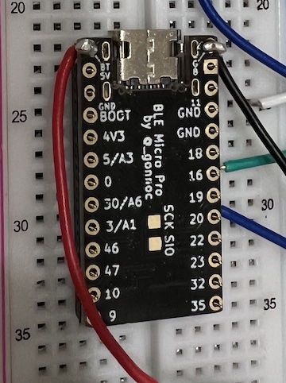

Meishi2にロータリーエンコーダつけたい、、つけたくない？
概要
無線 + 電池化したmeishi2を使って遊んでいる。で、ロータリーエンコーダを一基つけたくなった。
そしたら便利が加速して嬉しいんだわ。
やりたいこと
Meishi2がそのままデフォで利用している4つのキーに繋がってるBMP上のピン 9,10,19,18以外を使ってロータリーエンコーダをセットしたい。
ロータリーエンコーダを使える設定ファイルやらがBMPに用意してあって、神、、！
その設定ファイルであるencoder.jsnが、以前いじったconfig.jsnとは別ファイルなのでそのまま動いてほしい、、
頼む、、もうkeymapをいじりたくない、、
以下メモ(つまり全然うまく行ってない)
16, 20番のピンでチャレンジしてみる。
encoder.jsnを書き換えて、実際に接続をチャレンジ。
-> ロータリーエンコーダのA、Bを設定した端子に繋いで回して反応しねー、なんだろう。
この時の設定ファイルは以下
完全にBMPの話だが、まあうまくいかない、トラブルシュート力が低すぎる。
このあたりでブレッドボードを購入。
{"encoder":
{"enabled":1,
"definition":[
{"pin":[16,20],"step":1,"action":[["KC_LBRC","KC_RBRC"], ["KC_NO","KC_NO"], ["KC_NO","KC_NO"], ["KC_NO","KC_NO"], ["KC_NO","KC_NO"]]}
]}}
一日寝かせればなんとかなるか？と思ったが何ともならず、なんかいろんなサイトのロータリーエンコーダの記事みてるとプルアップ抵抗ってのが出てくる。
BMPにプルアップ抵抗は入ってるのか? 情報が特にないので入ってないものとしてまずブレッドボード上で組み立ててみる。
あとは
・ダイオードとかで整流？
いやボタンと違うし要らんのでは、、？ 要るのか、、？
・ロータリーエンコーダのGND繋がないとダメ？
多分ダメ、電気流れるんだぞなんで要らんと思った。
-> ちゃんと繋いだらとりあえず流れるようになったけど、うーん、、
・抵抗がないとpull upできないからダメ？
とりあえず適当な抵抗を買ってぶっ刺してみたが、まあ勘でやっていいことではないよな、、なので、BMPの中の人に質問投げた <- 今ここ
ちなみに勘でいろいろ繋いでみたが、正常に動く組み合わせは特にない。まだ。よくわかってないからほんと電子機器で素人の勘は微妙。
気になってること
やっとテスターを買った。 むしろ今までテスターなしで動いてたのすごくない？ いや何もわからないが動くことがあるっていう、、怖いね、、
テスターでBMPのGNDと繋ぐと電気出てるやんってなるピンが何個かあって、うーん謎、なんだけど、該当するのは
実機上での0, 16, 18, 46番のピン。 きっちり電源と同じ電圧が出てる
これはBMP側でデフォで流れてる感じなのか、それとも設定ファイルをいじった結果必要だから流れてるのかの区別がついてないが、
電流が流れてるピンx2 -> ロータリーエンコーダ <- GND みたいに接続すると、ロータリーエンコーダは反応するというのがわかった。が、1ツマミ動かすと左右に割り当てたアクションが両方発生する。なんでやねん。
電流が流れていないピンでは事象が発生しない。うーん、、あ、、もしかして、、わかった気がする、、うっすら思っていたことだが、、、B
BMPの基盤に書いてあるピン番号と実際のconfig上でのpin番号、マッチしてないんじゃね、、？
ずーっと違和感あったんだけど、meishi2が固定で繋ぎにくるピン番号と、configに書いたpin番号 = BMPのpin番号が一致してないんだよな。
んでBMPのサイトに載ってる基盤のピン番号入ってる画像と、手元にあるBMPの基盤に書いてあるピン番号もこれ一致してねーんだよな。
何が正しいんだ。サイトな気がする。現物に書いてあるピン番号、まちがってるんじゃね？これ。
サイトのやつ https://github.com/sekigon-gonnoc/BLE-Micro-Pro/blob/master/docs/design_guide.md
表から見た時のピン番号の画像がある。
手元のやつ(裏なのでサイト画像と見比べるなら、左右反転する前提)

サイトの数字や記号を、裏表合うように実物写真に振ってみると、、
あっなんかもう全然違う。こういうもん？
そんでmeishi2みてるとわかるんだけど、今4キー繋いでて、うち2つが9,10ってconfigに書いてて、それが繋がってるの、実写の右列の下から3,4番目なんだよな、、、
つまりconfigに書いてあるやつと実際に対応してるのは、サイト上の画像の数値で、、ええと、、つまり物理上の表記と関係ないわけで、、そういうもん、、？